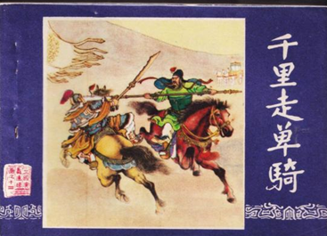

历史溯源
高抬戏剧目《走单骑》取材于《三国演义》的故事情节之一的《千里走单骑》，讲的是：
刘备在下邳与关羽失散后，投奔袁绍。关羽为保护刘备的两位夫人，暂时归降曹操。关羽在曹营中得知刘备已投奔袁绍，决定离开曹操去寻找刘备。关羽向曹操辞行，曹操虽极力挽留，甚至封关羽为汉寿亭侯，并将自己的女儿许配给他，但关羽仍坚决离去。关羽挂印封金，不辞而别，展现了其忠义无双的品格。
关羽带着刘备的两位夫人，单人匹马踏上寻找刘备的旅程。在途中，关羽历经重重考验，勇闯东岭关、洛阳、汜水关、荥阳和黄河渡口五个关口。在每个关口，关羽都受到了守将的阻拦。他凭借过人的武艺，先后斩杀了孔秀、韩福、孟坦、卞喜、王植和秦琪六员大将，展现了其英勇无畏的气概。
经过千辛万苦，关羽终于来到古城，与刘备、张飞兄弟三人团聚。刘备感动于关羽的忠义，三人相拥而泣，场面感人至深。
“千里走单骑”的故事不仅展现了关羽的忠义仁勇形象，也体现了中华民族传统文化中的忠义、仁勇精神。它激励了人们忠于祖国、忠于人民，勇于担当、不畏艰险的精神。同时，这个故事也反映了三国时期复杂多变的政治局势和人物之间错综复杂的关系。
高抬戏剧目《走单骑》定格的就是关羽保护刘备夫人过五关斩六将的画面。
演员及站位
高抬戏剧目《走单骑》选取的是故事中的两个主要角色：关羽和刘备夫人。
高抬戏剧目《走单骑》定格关羽保护刘备夫人过五关斩六将的画面中，刘备夫人居高处，关羽居下方。女角在上，一是考虑到其体重较轻，二是鉴于女角的可观赏度更高，除此之外，此站位还有诸多其它寓意。
刘备夫人，身为尊贵之躯，自然身居高处。她的存在，是刘备家族荣耀的象征，也是关羽心中誓死守护的宝贵。在高处，她静静地凝视着远方，眼中充满了对未来的期盼和对关羽深深的信赖。
而关羽，这位英勇的武士，身处下方，誓死保护刘备夫人。他的身姿挺拔，宛如山岳般坚定。他的眼神中透露出坚毅与决心，仿佛任何困难都无法阻挡他前进的步伐。他肩负着保护刘备夫人的重任，即使千里之遥，也要将她安全送达刘备的身边。
在这幅画面中，刘备夫人居高处，象征着尊贵与荣耀；而关羽居下方，则代表了他的忠诚与担当。他们之间的关系，不仅仅是主仆之分，更是基于深厚信任和共同理想的紧密纽带。关羽用他的行动诠释着“忠义仁勇”的精神，而刘备夫人则是他的守护对象。他们共同谱写着“千里走单骑”的传奇篇章，成为了后世传颂的佳话。
动作神态
高抬戏剧目《走单骑》定格关羽保护刘备夫人过五关斩六将的画面中，刘备夫人左手搭至右手上放置腹前。关羽左手摸胡须，右手持青龙偃月刀，霸气侧漏。
刘备夫人，身着华贵的衣裳，举止端庄，左手轻轻搭至右手上，优雅地放置在腹前。她的眼神中透露出一种从容与坚定，宛如一位真正的贵族夫人，即便在危难之中，也保持着那份独有的尊贵与宁静。她的存在，不仅是刘备家族荣耀的象征，更是关羽心中那份誓死守护的承诺。
而关羽，这位英勇的武士，左手不自觉地摸着胡须，透露出一种深思熟虑的沉稳。他的右手则紧紧握着那把传奇的青龙偃月刀，刀光闪烁，霸气侧漏。他的眼神锐利如鹰，仿佛能够洞察一切，任何敌人在他面前都显得微不足道。他身披着战袍，背负着保护刘备夫人的重任。他的存在，就是一种力量的象征，一种对忠诚与勇气的最好诠释。
在这幅画面中，刘备夫人与关羽的形象形成了鲜明的对比。刘备夫人以她的尊贵与从容，展现了女性的坚韧与智慧；而关羽则以他的英勇与霸气，彰显了男性的力量与担当。
妆面服饰
关羽的脸是红色的，这种独特的脸谱设计——揉红脸，正是为了凸显他忠勇无双的品质。红色在中国传统文化中象征着热烈、勇敢和忠诚，与关羽的赤胆忠心、义薄云天的性格特点不谋而合。正因如此，关羽被后世尊称为“红脸”，成为忠勇的代名词。
而刘备夫人则呈现出截然不同的风貌。她的脸庞洁白如玉，化着淡雅的妆容，凸显出她高贵而温婉的气质。白脸淡妆在中国传统文化中往往与女性之美、娴静之态相联系，恰如刘备夫人所展现的尊贵与从容。她与关羽的红脸形象形成鲜明对比，共同构成了“千里走单骑”这一传奇故事中的两道亮丽风景线。
关羽的红脸与刘备夫人的白脸淡妆，不仅丰富了这一历史故事的视觉层次，更深刻地传达了人物的性格特点和文化内涵。他们之间的形象对比与性格互补，使得这一故事更加引人入胜，成为后世传颂的佳话。
展演剪影
2014年4月27日高抬戏剧目《千里走单骑》亮相重华镇民俗文化节，2019年高抬戏剧目《千里走单骑》参加武侯祠成都大庙会表演。同时高抬戏剧目《千里走单骑》在青林口古镇进行巡游。
